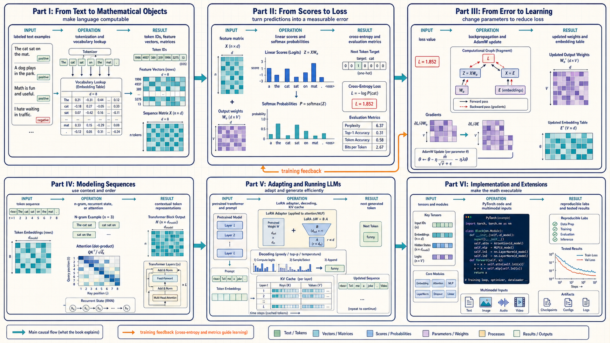

Roadmap
A model begins with data and a task, turns inputs into numerical representations, produces outputs, and compares those outputs with targets. Training uses the resulting loss to update parameters; inference uses fixed parameters to make a prediction or generate text.
The parts follow the computation in the order a reader needs to understand it.
Part I, From Text to Mathematical Objects (Chapters 1-4): defines data, targets, tokens, vocabulary IDs, and feature matrices.
Part II, From Scores to Loss (Chapters 5-9): turns features into scores and probabilities, chooses outputs, measures loss, and evaluates held-out data.
Part III, From Error to Learning (Chapters 10-14): traces gradients, changes parameters, and learns nonlinear and embedding representations.
Part IV, Modeling Sequences (Chapters 15-19): models order and context with n-grams, recurrent networks, attention, and transformers.
Part V, Adapting and Running LLMs (Chapters 20-21): adapts a pretrained model and serves generated tokens efficiently.
Part VI, Implementation and Extensions (Chapters 22-24): extends the same ideas to other modalities, PyTorch, and course labs.
The guide follows one computation from represented inputs through prediction, learning, sequence context, adaptation, and implementation.

The teal arrows show the main dependency path. The orange return path shows that measured loss and evaluation results guide later parameter updates.
Each Part adds a capability that is needed by the Part that follows it.

The path begins with model inputs and ends with verified code and multimodal extensions. Training feedback links measured loss back to the parameter-learning stage.
Where large language models fit
The course moves from the broad field of artificial intelligence to language models trained on token sequences.
- Artificial intelligence (AI) The broad field of building systems that perform tasks associated with perception, reasoning, prediction, or generation.
- Machine learning (ML) The part of AI in which parameters are learned from data rather than every decision being programmed directly.
- Deep learning Machine learning based on multilayer neural networks that learn intermediate representations.
- Generative AI Models whose output is newly produced content such as text, images, or audio.
- Large language model (LLM) A large neural language model trained on token sequences, usually with a next-token or masked-token objective.
Four decisions in every model workflow
Learning task, network family, training objective, and inference procedure answer different questions and are developed in the parts below.
- Learning task Defines the input and required target. Chapters 1-4 construct these objects.
- Network family Defines how features or sequence positions interact. Chapters 5, 12, and 15-18 develop the main families.
- Training objective Turns model outputs and targets into a scalar loss. Chapters 8 and 18-20 cover classification and language-model objectives.
- Inference procedure Turns fixed-model outputs into numbers, classes, or generated tokens. Chapters 7 and 21 cover prediction and serving.
Objects carried through a model workflow
The task describes what to predict; these objects are the values a computer stores, transforms, and reuses while making that prediction.
- Examples and targets Raw records, documents, images, or audio together with labels, numeric targets, or self-supervised next-token targets.
- Representation tensors Token IDs, masks, feature vectors, and batches. Token IDs are integers; masks are Boolean or 0/1 values; learned features are floating-point vectors.
- Parameters Trainable floating-point tensors: weights, biases, embedding tables, and projection matrices. Training changes these values.
- Activations and logits Intermediate floating-point tensors produced during the forward pass. Activations carry learned features between layers; logits are unnormalized output scores.
- Losses, gradients, and optimizer state A loss is one scalar objective. Gradients have the same dimensions as their parameters and indicate local changes to the loss; momentum and adaptive accumulators are optimizer state.
- Inference state Probabilities, selected output tokens, and for transformers cached keys and values. Inference reads parameters but does not update them.
Learning tasks and their targets
A task is identified by the object the model must return, not by the network used to compute it.
- Regression Returns a numeric target, such as a measured quantity.
- Classification Returns one label from a fixed set, or one label at each sequence position.
- Next-token modeling Uses each visible prefix to define the next token as a self-supervised target.
- Masked-token modeling Uses selected hidden positions as targets while allowing surrounding context.
- Sequence-to-sequence modeling Generates a target sequence conditioned on a source sequence.
- Representation learning Learns vectors whose distance or similarity supports retrieval, analogy, or cross-modal matching.
Model families and the context they use
A model family controls which input information can influence a prediction.
- Linear and multilayer models Consume a fixed-width feature vector and support regression or classification.
- N-gram models Use a fixed number of preceding tokens and estimate probabilities from counts.
- RNNs and LSTMs Carry a learned hidden state through a sequence and can return one output or a sequence of outputs.
- Transformers Use attention to combine information from permitted positions; masks and objectives determine classification, generation, or sequence-to-sequence use.
- Vision and multimodal models Convert images, audio, text, or table fields into vectors before applying convolution, attention, or contrastive learning.
Training computations
Training changes parameters by repeating a forward calculation and an update calculation.
- Forward pass Produces scores and probabilities from a batch of represented inputs.
- Objective Compares outputs with supervised or self-supervised targets and reduces the comparison to a scalar loss.
- Backward pass Uses the chain rule to compute how each trainable parameter affected the loss.
- Optimizer step Uses gradients and optimizer state to update parameters.
- Evaluation Runs the fixed model on held-out examples and reports task-appropriate metrics.
Inference computations
Inference keeps learned parameters fixed and applies a decision rule to model outputs.
- Single prediction Returns a numeric estimate or class after one forward pass.
- Autoregressive generation Selects one token, appends it to the context, and repeats the forward calculation.
- Serving state Reuses attention keys and values, batches active requests, and manages latency without changing the trained objective.
Model families and the tasks they support
The comparison keeps the context mechanism separate from the learning task it can support.
| Family | Context used | Typical output | Chapters |
|---|---|---|---|
| Linear and logistic models | A fixed feature vector | A number or one class | 5-6, 9 |
| N-gram models | A fixed token history | A next-token probability | 15 |
| RNNs and LSTMs | A recurrent hidden state | Sequence labels or generated tokens | 15 |
| Transformers | Attention over permitted positions | Classes, tokens, or a target sequence | 16-21 |
| Vision and multimodal models | Patches, frames, fields, or text vectors | A label, matched pair, or generated text | 22 |
The same learning task can use different families; the family determines how input information is combined before the task objective is applied.